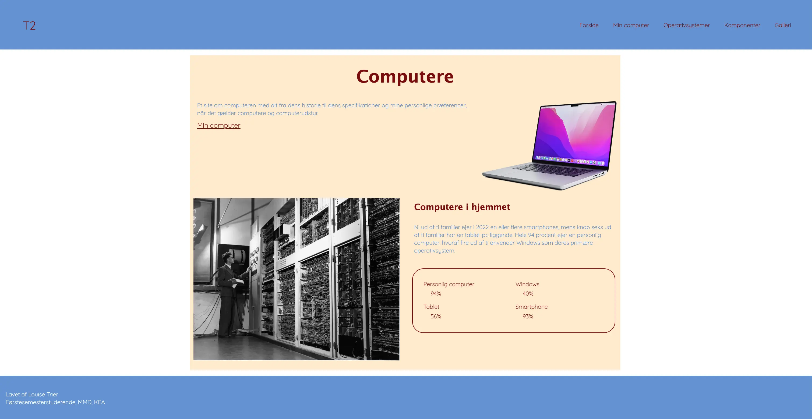

GRUNDLÆGGENDE WEB
LÆRING, PROCES & LØSNING
LÆRING ~ Under forløbet på Tema 02 - Grundlæggende Web fik jeg introduktion til de mest grundlæggende værktøjer for en multimediedesigner. Mere konkret fik jeg undervisning i de grundlæggende principper indenfor HTML og CSS samt viden og introduktion til at arbejde med “mobile-first” og responsivt design. På temaet tilærte jeg mig desuden viden om designmetoder og -principper herunder designkonventioner, gestaltlove, wireframes, typografi og styletiles.
PROCES ~ De tillærte færdigheder på dette tema blev anvendt i semestrets første projekt, studiestartsprøven. Her havde jeg til opgave at udarbejde et responsivt kodet website bestående af fem HTML-sider med udgangspunkt i udleveret indhold og opsætning i form af wireframes og layoutdiagrammer. Opgavebeskrivelsen for studiestartsprøven lød desuden på at anvende tillærte færdigheder indefor designprocesser og bruge min viden om gestaltlove, farver og typografier.
LØSNING ~ Mit færdige site kan tilgåes her. 